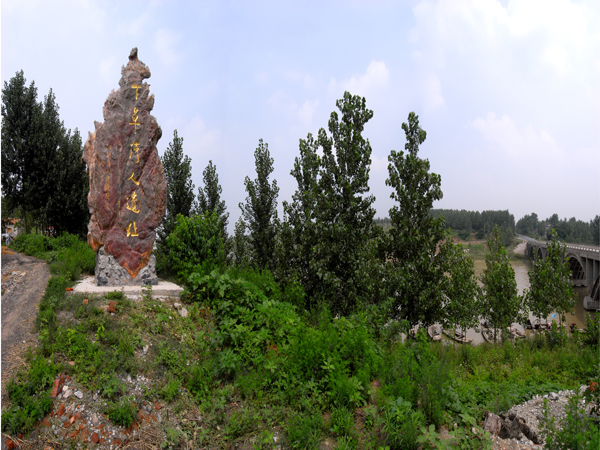

下草湾文化遗址位于泗洪县双沟镇东南8公里处的下草湾引河东岸，南临淮河，北滨洪泽湖，是江苏省发现最早的古人类遗址。
遗址现状为普通河坡，2002年被市政府确定为市级重点文物保护单位。1954年6月，中国科学院院士、地质学家、古生物学家杨钟健教授在下草湾考察时， 采集到一段长15.27cm的猿人股骨化石，是新世晚期人类化石，距今约4—5万年，属晚期智能人，命名为“下草湾新人”。
近年来，专家多次对下草湾地区进行考古调查和科学发掘，发现更新世和中新世古脊椎哺乳动物化石近百种，很多为新种新属，被称为下草湾动物群， 特别是出土的双沟醉猿、½淮宽齿猿，对研究从猿到人的演变过程，具有重要价值。地质学家在考察下草湾遗址时发现，该地区的土层结构为湖相沉积区， 被称为“下草湾高岭土地层”，与此同类地层统一命名为“下草湾系”，并载入《中国地质学》。